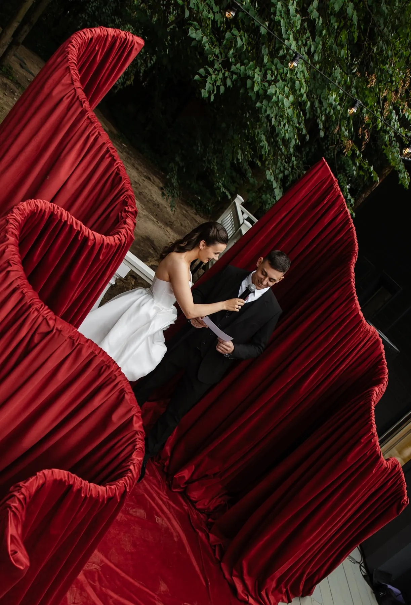

Фотозона на заказ — это объект, который делают под ваше событие, палитру и бренд: фон, объёмная форма, арка, конструкция. Хорошая фотозона работает дольше самого мероприятия: её снимают гости, а фото попадает в соцсети. Разбираем, как её выбрать и заказать.
Какие бывают фотозоны
- Объём. Большая форма из ткани или цветов. Например, бордовое сердце из бархата или красная бархатная волна из наших проектов.
- Фон. Стена из ткани или зелени, например велком-стена с бантами.
- Арка или портал. Гости проходят через неё и фотографируются внутри.
- Фигуры и буквы. Объёмные надписи, цифры, имя или логотип.


Для бизнеса и для частного праздника
Для бизнеса важно, чтобы фотозона отражала бренд: цвета, логотип, объект, связанный с продуктом, — без перегруза. Она стоит у входа или в лаунж-зоне. Подробнее — в статье про оформление корпоратива. Для частного праздника главное — настроение и палитра: цветы, ткань, свет. Идеи для свадеб — в статье про фотозону на свадьбу, для Нового года — в статье про новогоднюю фотозону.
На что обратить внимание
- Свет. Фотозоне нужен собственный мягкий свет, особенно вечером.
- Размер. В кадр должна помещаться компания; перед фотозоной нужно пространство, чтобы отойти.
- Фон за фотозоной. Нет ли зеркал, бликующих окон и случайных предметов.
- Устойчивость и безопасность. Конструкции крепят и утяжеляют, особенно на улице.
Как проходит заказ
- Бриф: повод, площадка, бренд или палитра.
- Идея и мудборд: форма, материалы, цвет.
- Смета по позициям.
- Монтаж на площадке и демонтаж после мероприятия.
Расскажите о событии — предложим идею и посчитаем смету. Другие примеры — в разделе «Кейсы».
Частые вопросы
Можно ли сделать фотозону в цветах бренда?
Да: цвета компании используют в ткани, цветах и объёмных деталях. Логотип лучше показывать дозированно.
Что выбрать — готовую позицию или новую фотозону?
Если нужна быстрая реализация, можно взять за основу позицию из каталога и изменить цвет и размер. Новую делаем под вашу идею.
Подойдёт ли фотозона для улицы?
Да, но конструкции продумывают с учётом ветра и осадков и фиксируют.